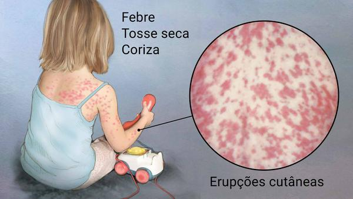

O Bagre foi feito para auxiliar a área da medicina, ele é de código fechado, sendo mais seguro de acessar.
Ele é o sucessor do "Kidabelhão", ambos são de minha autoria.
O Bagre atualmente é só para computadores e pode ser acessado por todos, não somente por médicos.
Tenho 10 anos e esse site foi introduzido em 2025, depois, em 2026 (futuro) vou lançar uma novo OS, o "Pão de Queijo"
No futuro, o Bagre será mais para celulares, com o app Ganache for mobile, espero que não tenha uma cópia disfarçando o tigrinho, diga NÃO ao jogo do tigrinho na play store